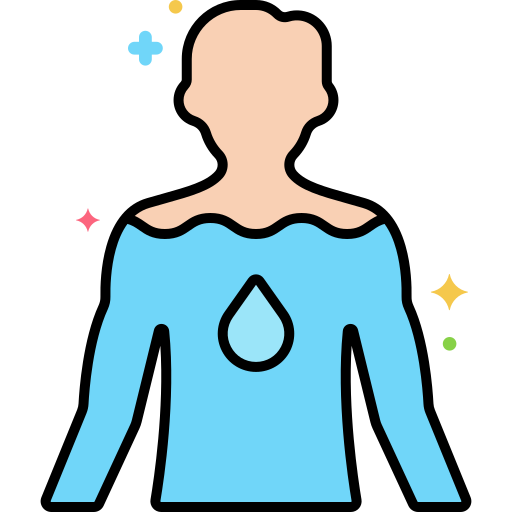
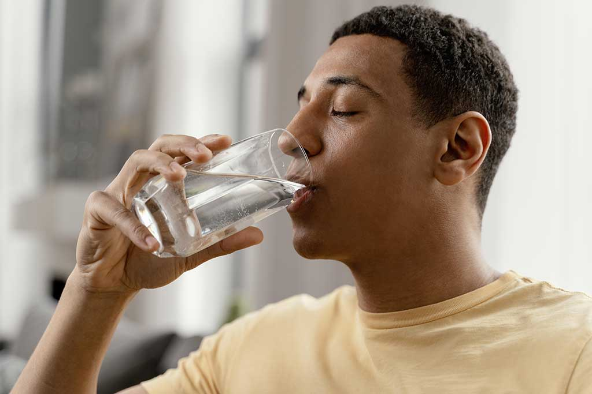
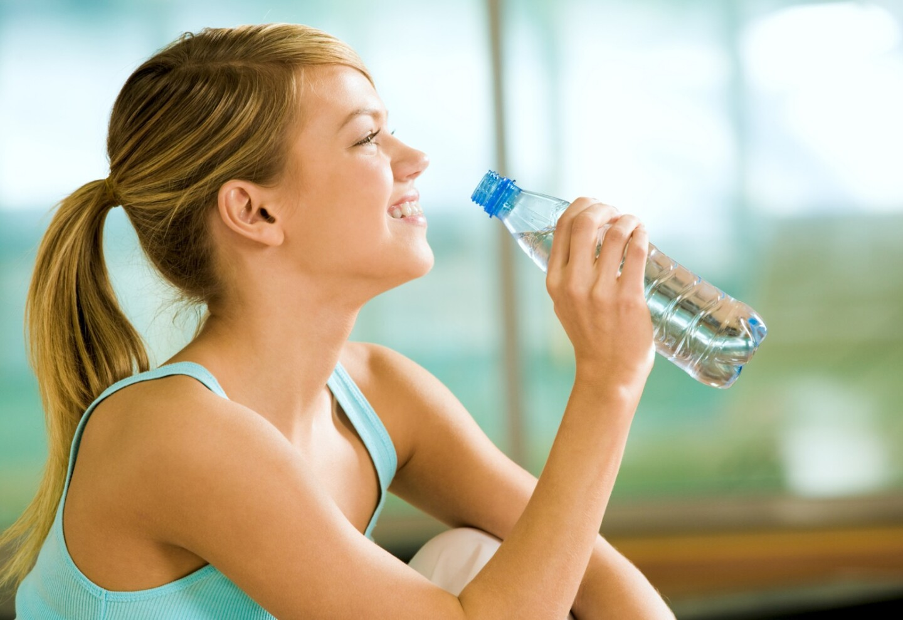

Beneficios del agua


Mejora la circulación sanguínea:
Una adecuada hidratación mejora la circulación, lo cual es crucial para la salud cardiovascular y para que el corazón pueda bombear sangre de manera más eficiente y poder estar sano.Regula la temperatura corporal:
El agua ayuda a regular la temperatura del cuerpo, a través de la sudoración y la respiración, evitando la deshidratación, especialmente en condiciones de alto calor o ejercicio intenso.
